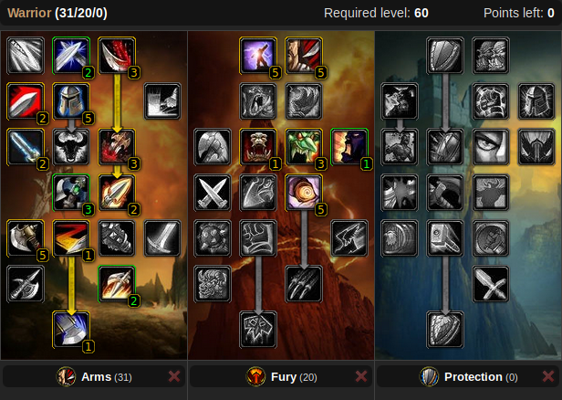

Talents
Talent calculatorPvP


PvE


Leveling
31/20/0 Arms is best for leveling. It provides damage value on every tier compared to Fury, which only yields Cruelty (5% crit) on the 1st tier and has a drought till the 4th tier (Enrage). Arms also includes Tactical Mastery which is great for tanking in dungeons and world PvP.
First 31 points into Arms:
- 3/3 Improved Rend
- 2/5 Deflection
- 2/2 Improved Charge
- 3/5 Tactical Mastery
- 2/2 Improved Overpower
- 3/3 Deep Wounds
- 2/2 Impale
- 3/5 Two-Handed Weapon Specialization
- 1/1 Sweeping Strikes
- 5/5 Axe Specialization
- Now some options:
- 5/5 Two-Handed Weapon Specialization + 5/5 Tactical Mastery or (best for damage)
- 5/5 Two-Handed Weapon Specialization + 2/3 Improved Hamstring or (good mix of damage and kiting ability)
- 2/3 Improved Hamstring + 5/5 Tactical Mastery or (best if you intend a lot of world PvP)
- 3/3 Improved Hamstring + 4/5 Tactical Mastery (best for kiting hard mobs)
- 1/1 Mortal Strike
Then the last 20 points into Fury:
- 5/5 Cruelty
- 5/5 Booming Voice
- 1/1 Piercing Howl
- 3/3 Blood Craze
- 1/5 Improved Battle Shout
- 5/5 Enrage
Axe spec is always preferred while leveling, even if you do not always have an axe. Always use your best weapons, it does not matter whether that is a 2-hand or 2 1-h weapons.